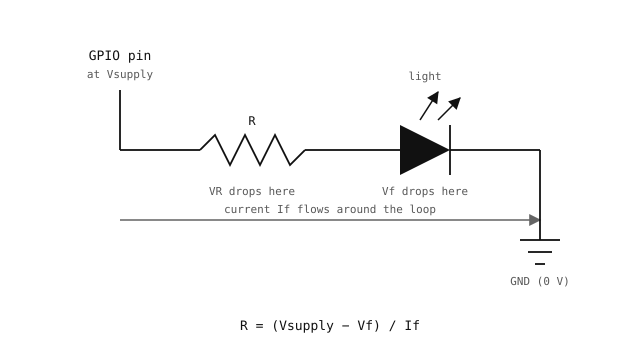

3.6. Electronics basics¶
Driving anything external from a GPIO pin needs a circuit on the other side of the pin. Three ideas from basic electronics – voltage, current, and the relationship between them through a resistor – show up in every such circuit.
3.6.1. Voltage, current, resistance¶
Voltage (volts, V) is the potential difference between two points in a circuit. The chip’s supply rail might be at 3.3 V relative to ground; a GPIO pin driven high sits at the same 3.3 V.
Current (amps, A, or milliamps, mA) is the flow of charge through a wire. Current always returns to where it came from, so for any current to flow, the circuit must form a complete loop from supply back to ground.
Resistance (ohms, Ω) is how much the path resists that flow. A resistor’s purpose is to set the current to a known value at a known voltage.
Ohm’s law ties them together:

Ohm’s law in its three forms.¶
In words: the voltage across a resistor equals the current through it times the resistance. Knowing any two of the three gives the third by algebra.
3.6.2. Diodes¶
A diode is a two-terminal component that conducts current in one direction (from anode to cathode) and blocks it in the other.

A diode conducts only from anode to cathode. An LED is a diode that emits light while conducting.¶
A diode also has a forward voltage (Vf) – the voltage
drop across it when current flows in the conducting direction.
Once the applied voltage reaches Vf the diode behaves
roughly like a wire; below it, almost no current flows.
3.6.3. LEDs¶
A light-emitting diode (LED) is a diode that converts its conduction current into visible or infrared light. Brightness scales with the current; colour is set by the LED’s chemistry, not by the drive.
Typical LED forward voltages:
Red: 1.8 – 2.2 V
Green or yellow: 2.0 – 2.4 V
Blue or white: 2.8 – 3.4 V
A useful operating current for an indicator LED is 5 – 20 mA. Higher currents are brighter but shorten the LED’s life and may exceed the GPIO pin’s drive limit.
3.6.4. The current-limiting resistor¶
Connecting an LED directly between a GPIO pin and ground would let almost unlimited current flow: once the forward voltage is reached, the LED looks like a near-short circuit. A series resistor between the pin and the LED sets the current to a safe value.

A series resistor sets the LED current.¶
The supply voltage divides between the resistor and the LED: the LED drops its forward voltage, the resistor drops the rest. By Ohm’s law:
R = (Vsupply - Vf) / If
For a red LED (Vf ≈ 2.0 V) driven from a 3.3 V GPIO pin at
10 mA:
R = (3.3 - 2.0) / 0.010 = 130 Ω
In practice, pick the nearest larger standard value (150 Ω or 220 Ω). The result is a slightly dimmer LED with a healthier safety margin. Reach for 200 – 470 Ω as a sensible default when exact brightness does not matter.
3.6.5. Why each piece matters¶
The shape of every GPIO output circuit comes out of the four ideas above:
Voltage sets the energy available at the pin. A 3.3 V GPIO has 3.3 V to spend across whatever is wired between it and ground.
A diode (an LED, in this case) consumes part of that voltage as its forward drop and refuses to conduct in the wrong direction – it sets the which way and the fixed share.
A current-limiting resistor consumes the remaining voltage and turns the leftover budget into a controlled current. Without it, the LED would draw whatever current the pin can supply – usually enough to destroy one or both.
Ohm’s law is what makes the resistor’s value calculable: given the leftover voltage and the desired current,
Rdrops out by algebra.
Voltage, current, resistance, diodes, and one rearranged equation are enough to design every basic GPIO output stage.
The same parts have been hiding behind the on-board LED all
along. machine.LED("LED_RED").on() lights the LED because
the camera’s board already provides everything around it –
the current-limiting resistor, the wire to ground, the LED
itself – and the class just toggles the silicon’s GPIO behind
them. The “one line lights an LED” view is true; it is just a
short way of saying “drive that circuit”. Strip the abstraction
away and exactly the circuit above is what remains.
machine.Pin is the same silicon exposed without the
surrounding parts. The script controls the pin’s voltage
directly; you supply the resistor (sized by Ohm’s law), the
LED, and the return path to ground. The same four ideas come
back, in slightly different combinations, behind switch
debouncing, PWM filtering, and motor drive.